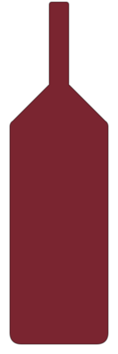
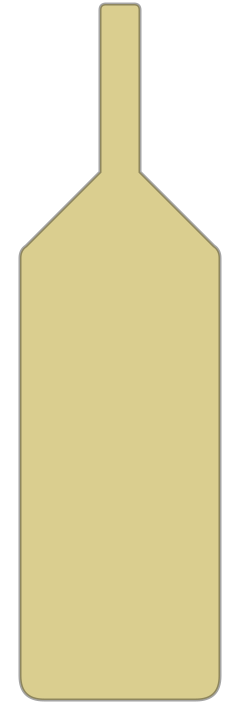
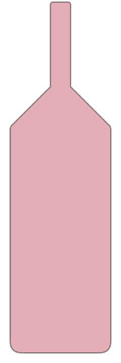

Onze kwaliteitsscore gaat over de wijn zelf en staat los van de prijs van vandaag. De prijs hoort bij het moment dat we hem zagen, dus die staat er altijd met datum bij.

Laurent Perrachon & Fils AC Vieilles Vignes - Beaujolais Fleurie ROOD · FRANKRIJK · BEAUJOLAIS (FLEURIE) · GAMAY · LAURENT PERRACHON ET FILS 8,5/10 PRIJS€ 9,74 PRIJS GEPEILD21.08.2026 Aluado Alicante Bouschet ROOD · PORTUGAL · ALENTEJO · ALICANTE BOUSCHET · DFJ VINHOS 8/10 PRIJS€ 7,99 PRIJS GEPEILD09.08.2026 Alvi's Drift Reserve Drift Fusion ROOD · ZUID-AFRIKA · WORCESTER (BREEDE RIVER VALLEY) · PINOTAGE · CABERNET SAUVIGNON · SHIRAZ · DURIF · PETIT VERDOT · GRENACHE · ALVI'S DRIFT 8/10 PRIJS€ 12,79 PRIJS GEPEILD21.08.2026 Domaine de Coste Chaude Madrigal ROOD · FRANKRIJK · CÔTES-DU-RHÔNE-VILLAGES VISAN (VALLÉE DU RHÔNE) · GRENACHE (80%) · SYRAH (20%) · DOMAINE DE COSTE CHAUDE 8/10 Laurent Perrachon & Fils Morgon Corcelette ROOD · FRANKRIJK · BEAUJOLAIS (MORGON) · GAMAY · LAURENT PERRACHON & FILS 8/10 PRIJS€ 10,49 PRIJS GEPEILD21.08.2026 Laurent Perrachon & Fils Moulin-a-Vent Terres Roses ROOD · FRANKRIJK · BEAUJOLAIS (MOULIN-À-VENT) · GAMAY · LAURENT PERRACHON & FILS 8/10 PRIJS€ 10,49 PRIJS GEPEILD21.08.2026
Maior de Mendoza Albariño on Lees WIT · SPANJE · RÍAS BAIXAS · ALBARIÑO · MAIOR DE MENDOZA 8/10 PRIJS€ 13,50 PRIJS GEPEILD21.08.2026 Maior de Mendoza Fulget Albarino WIT · SPANJE · RÍAS BAIXAS · ALBARIÑO · MAIOR DE MENDOZA 8/10 PRIJS€ 11,50 PRIJS GEPEILD21.08.2026 Weingut Prechtl Grüner Veltliner Ried Längen WIT · OOSTENRIJK · WEINVIERTEL · GRÜNER VELTLINER · WEINGUT PRECHTL 8/10 PRIJS€ 10,95 PRIJS GEPEILD21.08.2026 Alvi's Drift Reserve Chardonnay WIT · ZUID-AFRIKA · WORCESTER · CHARDONNAY · ALVI'S DRIFT 7,5/10 PRIJS€ 11,99 PRIJS GEPEILD21.08.2026 Barão de Vilar 10 Years Old Port met 2 portglazen ROOD · PORTUGAL · DOURO · TOURIGA NACIONAL · TOURIGA FRANCA · TINTA RORIZ · TINTO CÃO · TINTA BARROCA 7,5/10 PRIJS€ 24,99 PRIJS GEPEILD09.08.2026 Casa Amada Gran Reserva Carménère ROOD · CHILI · COLCHAGUA VALLEY · CARMÉNÈRE · VIÑA CASA SILVA 7,5/10 PRIJS€ 11,24 PRIJS GEPEILD21.08.2026 Domaine de la Motte Chablis WIT · FRANKRIJK · BOURGOGNE · CHARDONNAY · DOMAINE DE LA MOTTE 7,5/10 PRIJS€ 18,99 PRIJS GEPEILD09.08.2026
Domaine La Colombette Pink Colomb Bay ROSÉ · FRANKRIJK · LANGUEDOC (HÉRAULT) · PINOT NOIR · DOMAINE LA COLOMBETTE 7,5/10 Don Nicollo Nero Di Troia ROOD · ITALIË · PUGLIA · NERO DI TROIA · TERRECARSICHE 1939 7,5/10 PRIJS€ 9,49 PRIJS GEPEILD21.08.2026 Laurent Perrachon & Fils Beaujolais Villages Terre de Loyse ROOD · FRANKRIJK · BEAUJOLAIS · GAMAY · LAURENT PERRACHON & FILS 7,5/10 PRIJS€ 8,24 PRIJS GEPEILD21.08.2026 Los Vascos Cabernet Sauvignon ROOD · CHILI · COLCHAGUA VALLEY · CABERNET SAUVIGNON (100%) · VIÑA LOS VASCOS 7,5/10 PRIJS€ 8,99 PRIJS GEPEILD21.08.2026 Los Vascos Sauvignon Blanc WIT · CHILI · CASABLANCA VALLEY · SAUVIGNON BLANC · VIÑA LOS VASCOS 7,5/10 PRIJS€ 8,99 PRIJS GEPEILD21.08.2026 Paul Mas Estate Viognier Reserve WIT · FRANKRIJK · LANGUEDOC-ROUSSILLON / PAYS D'OC · VIOGNIER · DOMAINES PAUL MAS 7,5/10 PRIJS€ 8,99 PRIJS GEPEILD21.08.2026 Txakolina Bizkaiko Aretxaga WIT · SPANJE · BIZKAIKO TXAKOLINA (BASKENLAND) · HONDARRABI ZURI (80%) · FOLLE BLANCHE (20%) · BODEGAS VIRGEN DE LOREA 7,5/10 PRIJS€ 13,45 PRIJS GEPEILD21.08.2026 Weissburgunder Schloß Frankenberg WIT · DUITSLAND · FRANKEN · WEISSBURGUNDER · SCHLOSS FRANKENBERG 7,5/10 PRIJS€ 19,95 PRIJS GEPEILD21.08.2026 Château de Lastours Classic rosé Bio ROSÉ · FRANKRIJK · CORBIÈRES (LANGUEDOC) · GRENACHE · CINSAULT · SYRAH · CHÂTEAU DE LASTOURS 7/10 Contini Karmis Bianco WIT · ITALIË · SARDINIË (ISOLA DEI NURAGHI IGT) · VERNACCIA · VERMENTINO · AZIENDA VINICOLA CONTINI 7/10 Contini Pariglia Vermentino WIT · ITALIË · SARDINIË · VERMENTINO · ATTILIO CONTINI 7/10 Domaine de Coste Chaude Cuvée Florilège ROOD · FRANKRIJK · CÔTES DU RHÔNE (VILLAGES VISAN) · GRENACHE (70%) · SYRAH (30%) · DOMAINE DE COSTE CHAUDE 7/10 La Piuma Pecorino Terre di Abruzzo WIT · ITALIË · ABRUZZO · PECORINO · MGM MONDO DEL VINO 7/10 PRIJS€ 5,83 PRIJS GEPEILD21.08.2026 Los Vascos Chardonnay WIT · CHILI · COLCHAGUA VALLEY · CHARDONNAY · VIÑA LOS VASCOS 7/10 PRIJS€ 8,99 PRIJS GEPEILD21.08.2026 Paul Mas Cabernet Sauvignon ROOD · FRANKRIJK · LANGUEDOC-ROUSSILLON / PAYS D'OC · CABERNET SAUVIGNON · LES DOMAINES PAUL MAS 7/10 PRIJS€ 6,49 PRIJS GEPEILD21.08.2026 Paul Mas Chardonnay WIT · FRANKRIJK · PAYS D'OC (IGP), LANGUEDOC-ROUSSILLON · CHARDONNAY · DOMAINES PAUL MAS 7/10 PRIJS€ 6,49 PRIJS GEPEILD21.08.2026 Paul Mas Estate Merlot Reserve ROOD · FRANKRIJK · LANGUEDOC / PAYS D'OC · MERLOT · DOMAINES PAUL MAS 7/10 PRIJS€ 8,99 PRIJS GEPEILD21.08.2026 Paul Mas Merlot ROOD · FRANKRIJK · IGP PAYS D'OC (LANGUEDOC) · MERLOT · DOMAINES PAUL MAS 7/10 PRIJS€ 6,49 PRIJS GEPEILD21.08.2026 Paul Mas Sauvignon Blanc WIT · FRANKRIJK · PAYS D'OC (LANGUEDOC-ROUSSILLON) · SAUVIGNON BLANC · DOMAINES PAUL MAS 7/10 PRIJS€ 6,49 PRIJS GEPEILD21.08.2026 Paul Mas Vignes de Nicole Cabernet Sauvignon – Syrah ROOD · FRANKRIJK · LANGUEDOC-ROUSSILLON (IGP PAYS D'OC) · CABERNET SAUVIGNON · SYRAH · DOMAINES PAUL MAS 7/10 PRIJS€ 8,99 PRIJS GEPEILD21.08.2026 Paul Mas Vignes de Nicole Chardonnay – Viognier WIT · FRANKRIJK · LANGUEDOC (IGP PAYS D'OC) · CHARDONNAY · VIOGNIER · DOMAINES PAUL MAS 7/10 PRIJS€ 8,99 PRIJS GEPEILD21.08.2026 Paul Mas Viognier-Sauvignon WIT · FRANKRIJK · LANGUEDOC-ROUSSILLON / IGP PAYS D'OC · VIOGNIER (70%) · SAUVIGNON BLANC (30%) · DOMAINES PAUL MAS 7/10 PRIJS€ 6,49 PRIJS GEPEILD21.08.2026 Preignes le Vieux Oh la la Rosé ROSÉ · FRANKRIJK · LANGUEDOC-ROUSSILLON / PAYS D'OC IGP · GRENACHE · SYRAH · DOMAINE PREIGNES LE VIEUX 7/10 PRIJS€ 5,99 PRIJS GEPEILD21.08.2026 Stahlnagel No Cuvee No Party WIT · DUITSLAND · FRANKEN · SILVANER · BACCHUS · WINZERHOF NAGEL 7/10 PRIJS€ 10,99 PRIJS GEPEILD21.08.2026 Alvi's Drift Reserve CVC White Blend WIT · ZUID-AFRIKA · WORCESTER (BREEDE RIVER VALLEY, WESTERN CAPE) · CHENIN BLANC · VIOGNIER · CHARDONNAY · ALVI'S DRIFT 6,5/10 PRIJS€ 11,99 PRIJS GEPEILD21.08.2026 Canta Boca Verdejo Rueda DO WIT · SPANJE · RUEDA · VERDEJO · BODEGA COPABOCA 6,5/10 PRIJS€ 6,74 PRIJS GEPEILD21.08.2026 Domaine d'Avrillé Chenin Blanc WIT · FRANKRIJK · ANJOU (LOIRE VALLEY) · CHENIN BLANC · CHÂTEAU D'AVRILLÉ 6,5/10 PRIJS€ 7,49 PRIJS GEPEILD21.08.2026 Domaine Tariquet Tariquet WIT · FRANKRIJK · CÔTES DE GASCOGNE · UGNI BLANC · COLOMBARD · GROS MANSENG · SAUVIGNON · DOMAINE TARIQUET 6,5/10 La Piuma Sangiovese di Romagna DOC ROOD · ITALIË · EMILIA-ROMAGNA (ROMAGNA) · SANGIOVESE · MGM MONDO DEL VINO 6,5/10 PRIJS€ 5,83 PRIJS GEPEILD21.08.2026 Le Blanc par Paul Mas WIT · FRANKRIJK · LANGUEDOC-ROUSSILLON · COLOMBARD · MACABEO (MACABEU) · SAUVIGNON BLANC · VIOGNIER · PINOT GRIS · VERMENTINO · DOMAINES PAUL MAS 6,5/10 PRIJS€ 8,49 PRIJS GEPEILD21.08.2026 Le Rosé par Paul Mas ROSÉ · FRANKRIJK · LANGUEDOC-ROUSSILLON (IGP PAYS D'OC) · GRENACHE · CINSAULT · CALADOC · DOMAINES PAUL MAS 6,5/10 PRIJS€ 8,49 PRIJS GEPEILD21.08.2026 Menzatia Primitivo-Negroamaro ROOD · ITALIË · PUGLIA · PRIMITIVO · NEGROAMARO 6,5/10 PRIJS€ 9,99 PRIJS GEPEILD09.08.2026 Paul Mas Estate Chardonnay Reserve WIT · FRANKRIJK · PAYS D'OC (LANGUEDOC-ROUSSILLON) · CHARDONNAY · DOMAINES PAUL MAS 6,5/10 PRIJS€ 8,99 PRIJS GEPEILD21.08.2026 Paul Mas Vignes de Nicole Cabernet Sauvignon – Merlot ROOD · FRANKRIJK · LANGUEDOC-ROUSSILLON / IGP PAYS D'OC · CABERNET SAUVIGNON · MERLOT · DOMAINES PAUL MAS 6,5/10 PRIJS€ 8,99 PRIJS GEPEILD21.08.2026 Sartori Soave Classico WIT · ITALIË · VENETO, SOAVE CLASSICO · GARGANEGA · SARTORI DI VERONA 6,5/10 PRIJS€ 5,62 PRIJS GEPEILD21.08.2026 Weingut Prechtl Grüner Veltliner Classic WIT · OOSTENRIJK · WEINVIERTEL · GRÜNER VELTLINER · WEINGUT PRECHTL 6,5/10 PRIJS€ 8,95 PRIJS GEPEILD21.08.2026 La Piuma Montepulciano d'Abruzzo ROOD · ITALIË · ABRUZZO · MONTEPULCIANO · MGM MONDO DEL VINO 6/10 PRIJS€ 5,83 PRIJS GEPEILD21.08.2026 La Piuma Orvieto Classico DOC WIT · ITALIË · UMBRIA · TREBBIANO · GRECHETTO · CHARDONNAY · MGM MONDO DEL VINO 6/10 PRIJS€ 5,83 PRIJS GEPEILD21.08.2026 Montaignan - Merlot - 750ML ROOD · FRANKRIJK · LANGUEDOC-ROUSSILLON · MERLOT · MONTAIGNAN 6/10 PRIJS€ 4,49 PRIJS GEPEILD21.08.2026 Oro Italiano Governo ROOD · ITALIË · TOSCANE · MERLOT · SANGIOVESE 6/10 PRIJS€ 8,79 PRIJS GEPEILD09.08.2026 Sartori Soave DOC WIT · ITALIË · VENETO · GARGANEGA · TREBBIANO DI SOAVE · SARTORI DI VERONA 6/10 PRIJS€ 4,87 PRIJS GEPEILD21.08.2026 Schieber Merlot ROOD · HONGARIJE · SZEKSZÁRD · MERLOT · SCHIEBER PINCÉSZET 6/10 PRIJS€ 7,99 PRIJS GEPEILD21.08.2026 Tiempo & Tierra – Navarra Crianza - Tempranillo - 750ML ROOD · SPANJE · NAVARRA · TEMPRANILLO · CABERNET SAUVIGNON · MERLOT · BODEGAS PRÍNCIPE DE VIANA 6/10 PRIJS€ 3,74 PRIJS GEPEILD21.08.2026 XXX Coteaux Varois-en-Provence Rosé ROSÉ · FRANKRIJK · PROVENCE 6/10 PRIJS€ 9,49 PRIJS GEPEILD09.08.2026 Cibolo Chardonnay WIT · SPANJE · BODEGAS ALCEÑO 4,5/10 PRIJS€ 7,49 PRIJS GEPEILD09.08.2026 Picadora Chardonnay WIT · CHILI · CENTRAL VALLEY · CHARDONNAY 4/10 PRIJS€ 5,99 PRIJS GEPEILD09.08.2026 Pizza Lovers Vino Bianco WIT · ITALIË · FRIULI-VENEZIA GIULIA / TREVENEZIE IGT · RIBOLLA GIALLA · FRIULANO · CHARDONNAY · FOSSA MALA 4/10 PRIJS€ 6,35 PRIJS GEPEILD21.08.2026 Pizza Lovers Vino Rosso ROOD · ITALIË · DELLE VENEZIE · MERLOT · CABERNET · FOSSA MALA 3,5/10 PRIJS€ 6,35 PRIJS GEPEILD21.08.2026Geen wijn gevonden met deze combinatie.
We beoordelen alleen wijnen die we in een aanbieding tegenkomen, dus het wijnarchief groeit per week.